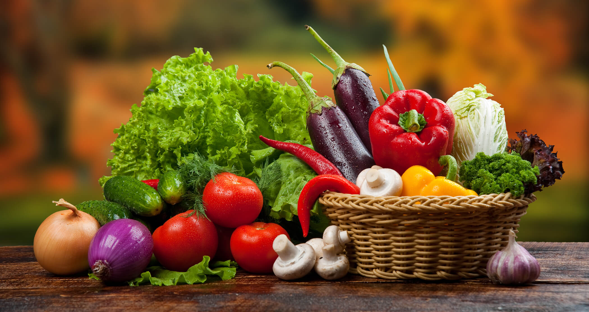
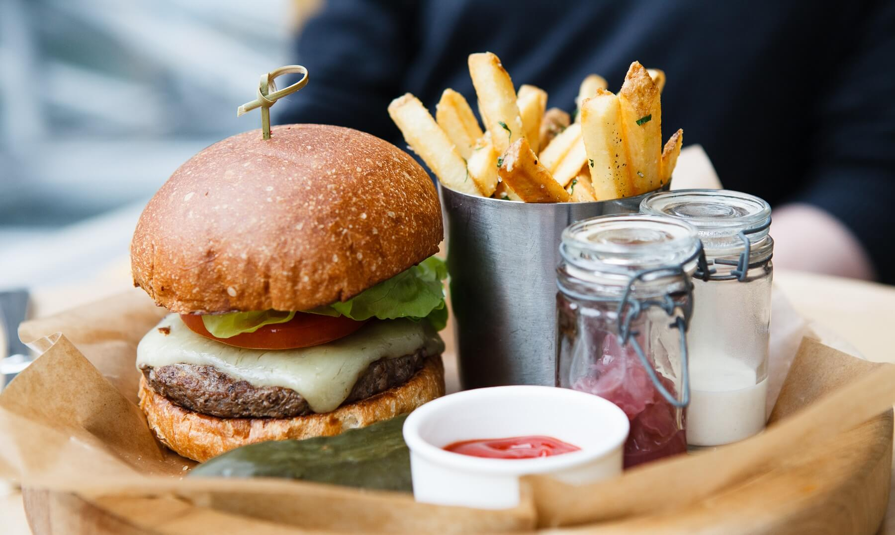

About us
Restaurant is a place for simplicity. Good food, good beer, and good service. Simple is the name of the game, and we’re good at finding it in all the right places, even in your dining experience. We’re a small group from Denver, Colorado who make simple food possible. Come join us and see what simplicity tastes like.



Affordable Pricing
- 全部
- 早餐
- 特色菜
- 萨拉
- 正餐
Great Place To Enjoy

OUR BEER
Here at Restaurant we’re all about the love of beer. New and bold flavors enter our doors every week, and we can’t help but show them off. While we enjoy the classics, we’re always passionate about discovering something new, so stop by and experience our craft at its best.


Our Featured Dishes Menu
Have A Look To Our Dishes!
Each food is handmade at the crack of dawn, using only the simplest of ingredients to bring out smells and flavors that beckon the whole block. Stop by anytime and experience simplicity at its finest.